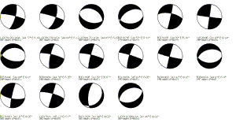
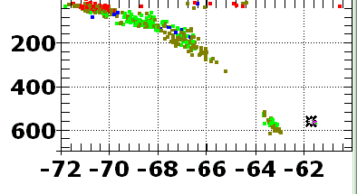

- Focal mechanisms: draw all the focal mechanisms on a single image.

- Graph by latitude
- Graph by longitude

- Graph by latitude (km units).
- Graph by longitude (km units). By default the graph will have no vertical exaggeration.

- Earthquake focal mechanisms 3D
- Zoom and rotate the OpenGL view.


- Focal planes on stereonet.
Too much data will probably make
this very hard to interpret.
With a reasonable number of
mechanisms, you can see trends.
- There appears to be a single set of strike-slip faults, nearly vertical, with a strike either about N20E or N 70W.
- There is a single set of normal faults, with a strike betweeen N50E and N90, with dips either to the N or S at about 45 degrees.

- Poles to focal planes on stereonet (the pole is the line normal to the plane, which projects to a point on the stereonet.). Too much data will probably make this very hard to interpret.

- Dip directions for focal planes on
stereonet. Too much data
will probably make this very
hard to interpret.
- The normal faults are in green, and there are two groupings: moderate dips down to the NW, and moderate dips down to the SE